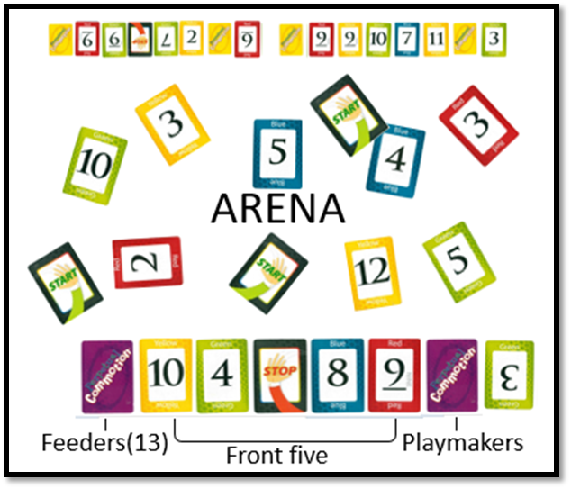
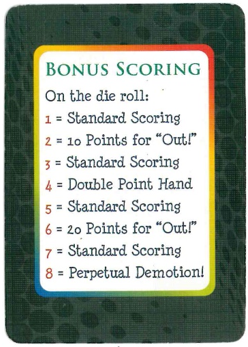

Instructions
To start playing >>
Overview
Perpetual Commotion is a fast-paced game where players earn point for each card they play on single-color card piles
in a common, central playing area called the Arena. Each pile
begins with a Start card, followed by a 2, 3 and so on up to
the 12 card of the same color. (Start cards are “wild”; a “2”
of any color may be played on them.) A Stop card ends the
pile. Players may play their cards on any pile of the correct
color. The first player in each round to get rid of the 13 cards
in their Feeders pile may call “Out!” ending the round and
scoring extra points.
Preparing to Play
After the starter calls “Go!” each player will place 5 cards
face up in their playing area (called the Front Five) and 13
cards in a single pile face down (called the Feeders pile) to
the right of the Front Five. You will sort through the remainder
of the cards (called the Playmakers), three at a time, to turn
up cards you can play into the Arena
You may only play the top card;
if you play the top card, you may then play the next card
showing, and so on. When you can’t play any more cards,
deal out three more and place them on top of the previous
cards, and so on throughout the deck. Once you have played
through the Playmakers, pick the cards up and flip them over
so they’re face down again.
This re-orders the deck so a
new card appears as the top card of every three. Now you’re
ready to sort through the deck again, which you’ll do continuously
throughout the round.
Playing a Round
When the starter calls “Go!” players release the deck in their
left hand at the same time they take the deck from the player
on their right. Then, they immediately
set up their playing area with the Front Five and Feeders pile.
If any players have Start cards in their Front Five, they play
them into the Arena to start a pile. If there are no Start cards
out, players can begin sorting through their Playmakers until
a Start card appears.
Once someone plays a Start card into the Arena, any player
may play any color “2” card on top. The color of the “2” will
determine the color of the pile; players continue to build up
the single-color piles to “12,” when a player may finish the
pile with a Stop card. At that point no more cards may be
played on that pile.
Players may play cards into the Arena from either their Front
Five or their Playmakers deck. When one of the Front Five is
played, leaving a “hole” in the
lineup, players fill the hole with a card from their Feeders pile
(and only their Feeders pile), so that there are always five
cards in the Front Five.
Keep in mind while playing that the first player to call “Out!”
after emptying their Feeders pile will earn extra points and
cause other players to deduct two points for each card left
in their Feeders piles. To get a high score, it’s important to
play as many cards as you can into the Arena, but also to
play down your Feeders pile as quickly as possible to avoid
penalty points for leftover cards.
Ending the Round
Players continue to play cards onto the piles in the center
Arena from their Playmakers deck and Front Five, filling
holes in their Front Five from their Feeders pile. When any
player plays the last card in their Feeders pile, that player
may end the round by calling “Out!” The other players may
fill any holes in their Front Five at the end of the round before
scoring begin
Standard Scoring
Each player should remember the number of cards left in
their Feeders pile, then set the remaining Feeders pile cards
and Playmakers cards aside.
Players sort the cards in the Arena, giving each player
their own cards to count for scoring. Points are awarded or
subtracted as follows:

• 1 point for each card played into the Arena
• Double points subtracted for each card left in a player’s
• Feeder pile
• 5 extra points for the player who calls “Out!”
Bonus Scoring
After the first round, bonus scoring begins. At the beginning
of each of the next rounds, the player who called, “Out!” in
the previous round rolls the eight-sided die to determine the
scoring of the round.
Winning the Game
The first player to reach the most points wins the game.
Additional Rules, Tips & Strategies.
A player doesn’t have to call “Out!” if their Feeders pile
is empty, as it may be to their advantage to play more
cards into the Arena before ending the round. However, if
another player empties their Feeders pile in the meantime
and calls “Out!” before the first player, the second player
will be the one to receive the bonus points awarded for
calling “Out” first.